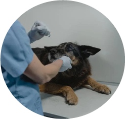
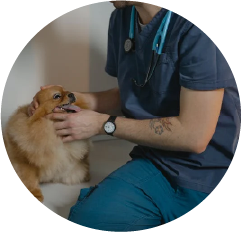
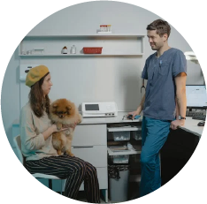
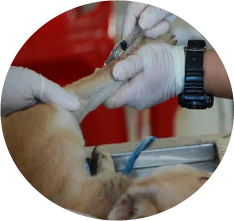
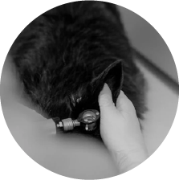
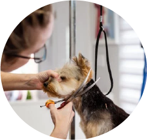

HOSPITALIZACIÓN
Brindamos atención especializada y cuidado continuo para mascotas que requieren vigilancia y tratamiento medico

ODONTOLOGÍA
Brindamos atención especializada y cuidado continuo para mascotas que requieren vigilancia y tratamiento medico

CONSULTA
Ofrecemos consultas exhaustivas y personalizadas para evaluar la salud de las mascotas y proporcionar recomendaciones de cuidado

VACUNACIÓN
Protegemos a las mascotas contra enfermedades graves mediante la administración de vacunas recomendadas

CIRUGÍA
Realizamos procedimientos quirúrgicos con los mas altos estándares de seguridad y atención

BELLEZA
Consentimos a las mascotas con servicios de peluquería y estética, que incluyen baños, corte de cabello, cepillado y cuidado de uñas